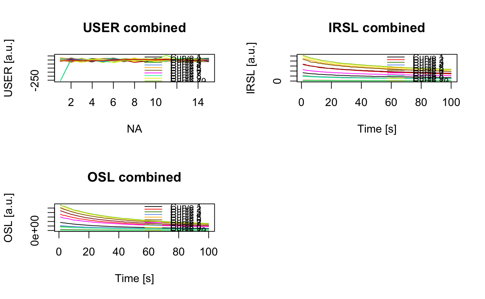
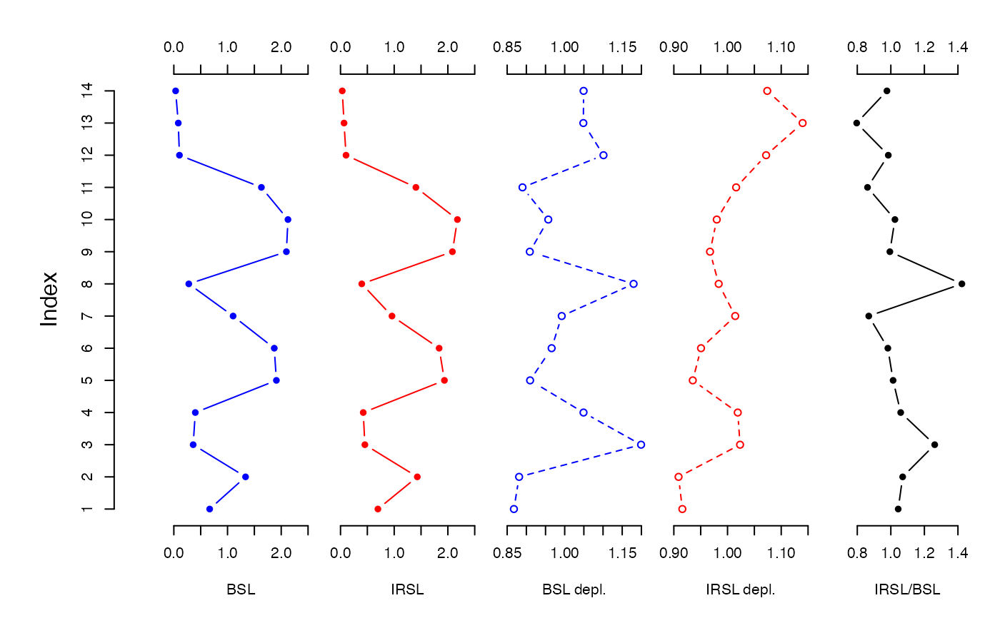

The function analyses CW-OSL curve data produced by a SUERC portable OSL reader and produces a combined plot of OSL/IRSL signal intensities, OSL/IRSL depletion ratios and the IRSL/OSL ratio.
analyse_portableOSL(
object,
signal.integral = NULL,
invert = FALSE,
normalise = FALSE,
mode = "profile",
coord = NULL,
plot = TRUE,
...
)RLum.Analysis (required): RLum.Analysis object produced by read_PSL2R. The input can be a list of such objects, in such case each input is treated as a separate sample and the results are merged.
numeric (required): A vector of two values specifying the lower and upper channel used to calculate the OSL/IRSL signal. Can be provided in form of c(1, 5) or 1:5.
logical (with default): TRUE flip the plot the data in reverse order.
logical (with default): TRUE to normalise the OSL/IRSL signals
to the mean of all corresponding data curves.
character (with default): defines the analysis mode, allowed
are "profile" (the default) and "surface" for surface interpolation. If you select
something else, nothing will be plotted (similar to plot = FALSE).
list matrix (optional): a list or matrix of the same length as
number of samples measured with coordinates for the sampling positions. Coordinates
are expected to be provided in meter (unit: m).
Expected are x and y coordinates, e.g.,
coord = list(samp1 = c(0.1, 0.2). If you have not measured x coordinates, please x should be 0.
logical (with default): enable/disable plot output
other parameters to be passed to modify the plot output.
Supported are run to provide the run name ,
if the input is a list, this is set automatically. Further plot parameters are
surface_values (character with value to plot), legend (TRUE/FALSE), col_ramp (for
surface mode), contour (contour lines TRUE/FALSE in surface mode), grid (TRUE/FALSE), col, pch (for profile mode), xlim (a name list for profile mode), ylim,
zlim (surface mode only), ylab, xlab, zlab (here x-axis labelling), main, bg_img (for
profile mode background image, usually a profile photo; should be a raster object),
bg_img_positions (a vector with the four corner positions, cf. graphics::rasterImage)
Returns an S4 RLum.Results object with the following elements:
$data
.. $summary: data.frame with the results
.. $data: list with the RLum.Analysis objects
.. $args: list the input arguments
This function only works with RLum.Analysis objects produced by read_PSL2R.
It further assumes (or rather requires) an equal amount of OSL and IRSL curves that
are pairwise combined for calculating the IRSL/OSL ratio. For calculating the depletion ratios
the cumulative signal of the last n channels (same number of channels as specified
by signal.integral) is divided by cumulative signal of the first n channels (signal.integral).
Note: The function assumes the following sequence pattern: DARK COUNT, IRSL, DARK COUNT, BSL, DARK COUNT. If you have written a different sequence, the analysis function will (likely) not work!.
Signal processing
The function processes the signals as follows: BSL and IRSL signals are extracted using the
chosen signal integral, dark counts are taken in full.
Working with coordinates Usually samples are taken from a profile with a certain stratigraphy. In the past the function calculated an index. With this newer version, you have two option of passing on xy-coordinates to the function:
(1) Add coordinates to the sample name during measurement. The form is rather
strict and has to follow the scheme _x:<number>|y:<number>. Example:
sample_x:0.2|y:0.4.
(2) Alternatively, you can provide a list or matrix with the sample coordinates.
Example: coord = list(c(0.2, 1), c(0.3,1.2))
Please note that the unit is meter (m) and the function expects always xy-coordinates. The latter one is useful for surface interpolations. If you have measured a profile where the x-coordinates to not measure, x-coordinates should be 0.
0.1.0
Burow, C., Kreutzer, S., 2024. analyse_portableOSL(): Analyse portable CW-OSL measurements. Function version 0.1.0. In: Kreutzer, S., Burow, C., Dietze, M., Fuchs, M.C., Schmidt, C., Fischer, M., Friedrich, J., Mercier, N., Philippe, A., Riedesel, S., Autzen, M., Mittelstrass, D., Gray, H.J., Galharret, J., 2024. Luminescence: Comprehensive Luminescence Dating Data Analysis. R package version 0.9.24.9000-106. https://CRAN.R-project.org/package=Luminescence
## example profile plot
# (1) load example data set
data("ExampleData.portableOSL", envir = environment())
# (2) merge and plot all RLum.Analysis objects
merged <- merge_RLum(ExampleData.portableOSL)
plot_RLum(
object = merged,
combine = TRUE,
records_max = 5,
legend.pos = "outside")

merged
#>
#> [RLum.Analysis-class]
#> originator: merge_RLum.Analysis()
#> protocol: portable OSL
#> additional info elements: 196
#> number of records: 70
#> .. : RLum.Data.Curve : 70
#> .. .. : #1 USER | #2 IRSL | #3 USER | #4 OSL | #5 USER | #6 USER | #7 IRSL
#> .. .. : #8 USER | #9 OSL | #10 USER | #11 USER | #12 IRSL | #13 USER | #14 OSL
#> .. .. : #15 USER | #16 USER | #17 IRSL | #18 USER | #19 OSL | #20 USER | #21 USER
#> .. .. : #22 IRSL | #23 USER | #24 OSL | #25 USER | #26 USER | #27 IRSL | #28 USER
#> .. .. : #29 OSL | #30 USER | #31 USER | #32 IRSL | #33 USER | #34 OSL | #35 USER
#> .. .. : #36 USER | #37 IRSL | #38 USER | #39 OSL | #40 USER | #41 USER | #42 IRSL
#> .. .. : #43 USER | #44 OSL | #45 USER | #46 USER | #47 IRSL | #48 USER | #49 OSL
#> .. .. : #50 USER | #51 USER | #52 IRSL | #53 USER | #54 OSL | #55 USER | #56 USER
#> .. .. : #57 IRSL | #58 USER | #59 OSL | #60 USER | #61 USER | #62 IRSL | #63 USER
#> .. .. : #64 OSL | #65 USER | #66 USER | #67 IRSL | #68 USER | #69 OSL | #70 USER
# (3) analyse and plot
results <- analyse_portableOSL(
merged,
signal.integral = 1:5,
invert = FALSE,
normalise = TRUE)

get_RLum(results)
#> ID RUN BSL BSL_error IRSL IRSL_error BSL_depletion
#> 1 1 ALU 0.66751034 0.0016178539 0.69677206 0.0035040643 0.8675537
#> 2 2 ALU 1.33608934 0.0022884430 1.43034913 0.0050268167 0.8811300
#> 3 3 ALU 0.35999022 0.0011869945 0.45413426 0.0028330832 1.1992200
#> 4 4 ALU 0.39980864 0.0012483733 0.42331051 0.0027004844 1.0490701
#> 5 5 ALU 1.91016028 0.0027332907 1.93584455 0.0058476153 0.9097980
#> 6 6 ALU 1.87047105 0.0027051257 1.83712738 0.0056976151 0.9659504
#> 7 7 ALU 1.10402143 0.0020801568 0.95869456 0.0041114642 0.9922993
#> 8 8 ALU 0.27824348 0.0010434799 0.39608610 0.0026434540 1.1796670
#> 9 9 ALU 2.09649886 0.0028644330 2.08440551 0.0060688839 0.9090499
#> 10 10 ALU 2.12595947 0.0028889095 2.17793540 0.0062025491 0.9572100
#> 11 11 ALU 1.63105170 0.0025284109 1.40432450 0.0049269556 0.8899796
#> 12 12 ALU 0.10425127 0.0006390972 0.10266938 0.0013732741 1.1011572
#> 13 13 ALU 0.08261577 0.0005690871 0.06579380 0.0010890682 1.0486319
#> 14 14 ALU 0.03332815 0.0003606878 0.03255285 0.0007974928 1.0492829
#> IRSL_depletion IRSL_BSL_RATIO DARK DARK_error COORD_X COORD_Y
#> 1 0.9158216 1.0438371 1.1111111 8.568500 0 1
#> 2 0.9087895 1.0705490 -0.8222222 12.384537 0 2
#> 3 1.0233685 1.2615183 -0.2444444 8.931954 0 3
#> 4 1.0190504 1.0587828 -0.1555556 8.355607 0 4
#> 5 0.9352608 1.0134461 -7.5333333 39.122535 0 5
#> 6 0.9506562 0.9821737 0.5111111 14.822621 0 6
#> 7 1.0143051 0.8683659 -2.8888889 11.954882 0 7
#> 8 0.9835481 1.4235234 0.5333333 7.322444 0 8
#> 9 0.9673997 0.9942316 -2.6444444 11.790126 0 9
#> 10 0.9799674 1.0244482 1.4000000 12.498000 0 10
#> 11 1.0160485 0.8609933 0.2666667 11.993180 0 11
#> 12 1.0718821 0.9848262 -6.4222222 38.856665 0 12
#> 13 1.1398779 0.7963831 1.0222222 6.471929 0 13
#> 14 1.0740241 0.9767372 -1.0666667 4.750120 0 14